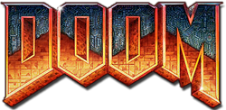
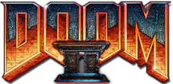
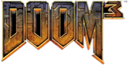
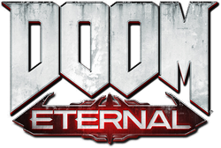
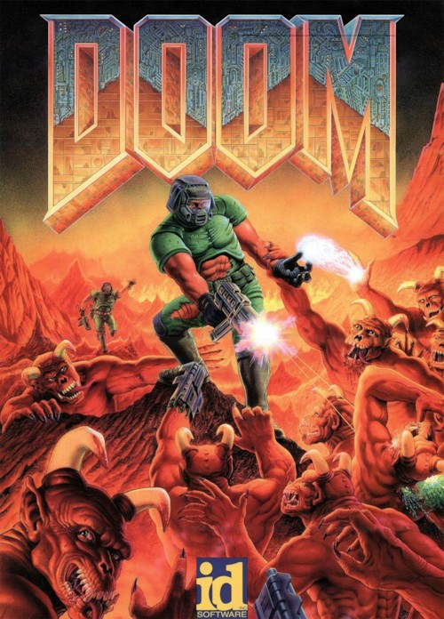

-
 도타 2의 영웅 파멸의 사도에 대한 내용은 파멸의 사도 문서를,
1970년대까지 널리 쓰였던 주차장의 순우리말 표현에 대한 내용은 주차장 문서를 참조하십시오.
도타 2의 영웅 파멸의 사도에 대한 내용은 파멸의 사도 문서를,
1970년대까지 널리 쓰였던 주차장의 순우리말 표현에 대한 내용은 주차장 문서를 참조하십시오.
최근 수정 시각: 2018-08-31 22:50:09 / 글자 수 : 31792
|
둠 시리즈 |
||
| 클래식 시리즈 | ||
|  |  |  |
|
둠 더 얼티밋 둠 |
둠 2: 헬 온 어스 마스터 레벨 포 둠 2 파이널 둠 둠 64 |
둠 3 둠 3: 악마의 부활 둠 3: BFG 에디션 |
| 리부트 시리즈 | ||
|  | ||
| 둠(2016) 둠 VFR |
둠 이터널 | |
| 둠 DOOM |
|
|  | |
| 개발 | 이드 소프트웨어 |
| 유통 | GT 인터랙티브 (MS-DOS, 매킨토시, 세가 새턴) |
| 플랫폼 |
MS-DOS Mac OS 슈퍼 32X 아타리 재규어 SNES 플레이스테이션 3DO Windows 95 세가 새턴 게임보이 어드밴스 Xbox Xbox 360 iOS 플레이스테이션 3 |
| 출시 | 1993년 12월 10일 (MS-DOS, 북아메리카 지역) |
| 장르 | FPS 호러 게임 |
| 등급 | 17+ |
| 엔진 | 둠 엔진 |
죽음, 파멸, 혹은 피할 수 없는 비운을 뜻하는 단어다.